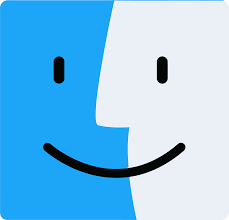
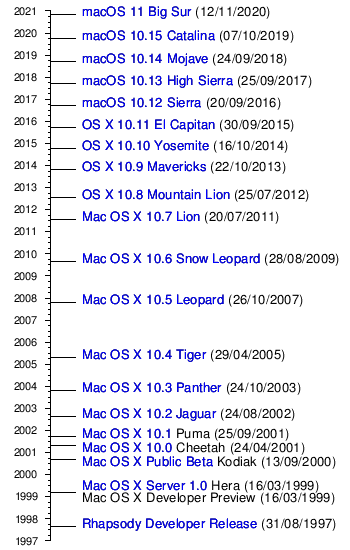

Introduction Windows Linux MacOS Android

MacOS ( previously Mac OS X and later OS X) is a proprietary graphical operating system developed and marketed by Apple Inc.
It is the primary operating system for Apple's Mac computers. Within the market of desktop, laptop and home computers, and by web usage, it is the second most widely used desktop OS, after Windows NT.
macOS succeeded the classic Mac OS, a Macintosh operating system with nine releases from 1984 to 1999. During this time, Apple cofounder Steve Jobs had left Apple and started another company, NeXT, developing the NeXTSTEP platform that would later be acquired by Apple to form the basis of macOS.
The first desktop version, Mac OS X 10.0, was released in March 2001, with its first update, 10.1, arriving later that year. Releases from Mac OS X 10.5 Leopard and thereafter are UNIX 03 certified. Apple's mobile operating system, iOS, has been considered a variant of macOS.
The heritage of what would become macOS had originated at NeXT, a company founded by Steve Jobs following his departure from Apple in 1985. There, the Unix-like NeXTSTEP operating system was developed, and then launched in 1989. The kernel of NeXTSTEP is based upon the Mach kernel, which was originally developed at Carnegie Mellon University, with additional kernel layers and low-level user space code derived from parts of BSD. Its graphical user interface was built on top of an object-oriented GUI toolkit using the Objective-C programming language. Throughout the early 1990s, Apple had tried to create a "next-generation" OS to succeed its classic Mac OS through the Taligent, Copland and Gershwin projects, but all were eventually abandoned. This led Apple to purchase NeXT in 1996, allowing NeXTSTEP, then called OPENSTEP, to serve as the basis for Apple's next generation operating system. This purchase also led to Steve Jobs returning to Apple as an interim, and then the permanent CEO, shepherding the transformation of the programmer-friendly OPENSTEP into a system that would be adopted by Apple's primary market of home users and creative professionals. The project was first code named "Rhapsody" and then officially named Mac OS X.
One of the major differences between the classic Mac OS and the current macOS was the addition of Aqua, a graphical user interface with water-like elements, in the first major release of Mac OS X. Every window element, text, graphic, or widget is drawn on-screen using spatial anti-aliasing technology. ColorSync, a technology introduced many years before, was improved and built into the core drawing engine, to provide color matching for printing and multimedia professionals. Also, drop shadows were added around windows and isolated text elements to provide a sense of depth. New interface elements were integrated, including sheets (dialog boxes attached to specific windows) and drawers, which would slide out and provide options.
The use of soft edges, translucent colors, and pinstripes, similar to the hardware design of the first iMacs, brought more texture and color to the user interface when compared to what Mac OS 9 and Mac OS X Server 1.0's "Platinum" appearance had offered. According to Siracusa, the introduction of Aqua and its departure from the then conventional look "hit like a ton of bricks." Bruce Tognazzini (who founded the original Apple Human Interface Group) said that the Aqua interface in Mac OS X 10.0 represented a step backwards in usability compared with the original Mac OS interface. Third-party developers started producing skins for customizable applications and other operating systems which mimicked the Aqua appearance. To some extent, Apple has used the successful transition to this new design as leverage, at various times threatening legal action against people who make or distribute software with an interface the company says is derived from its copyrighted design.
Apple has continued to change aspects of the macOS appearance and design, particularly with tweaks to the appearance of windows and the menu bar. Since 2012, Apple has sold many of its Mac models with high-resolution Retina displays, and macOS and its APIs have extensive support for resolution-independent development on supporting high-resolution displays. Reviewers have described Apple's support for the technology as superior to that on Windows.
The human interface guidelines published by Apple for macOS are followed by many applications, giving them consistent user interface and keyboard shortcuts. In addition, new services for applications are included, which include spelling and grammar checkers, special characters palette, color picker, font chooser and dictionary; these global features are present in every Cocoa application, adding consistency. The graphics system OpenGL composites windows onto the screen to allow hardware-accelerated drawing. This technology, introduced in version 10.2, is called Quartz Extreme, a component of Quartz. Quartz's internal imaging model correlates well with the Portable Document Format (PDF) imaging model, making it easy to output PDF to multiple devices. As a side result, PDF viewing and creating PDF documents from any application are built-in features. Reflecting its popularity with design users, macOS also has system support for a variety of professional video and image formats and includes an extensive pre-installed font library, featuring many prominent brand-name designs.
